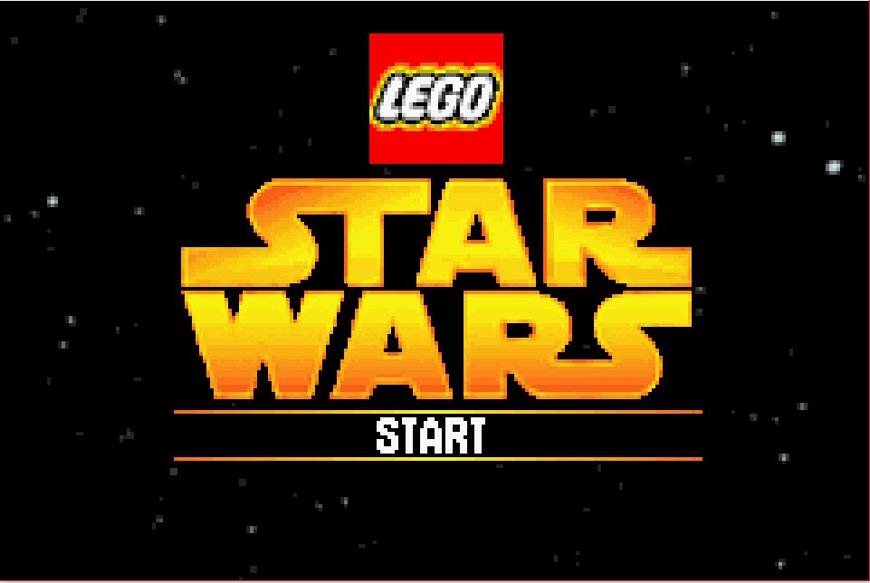
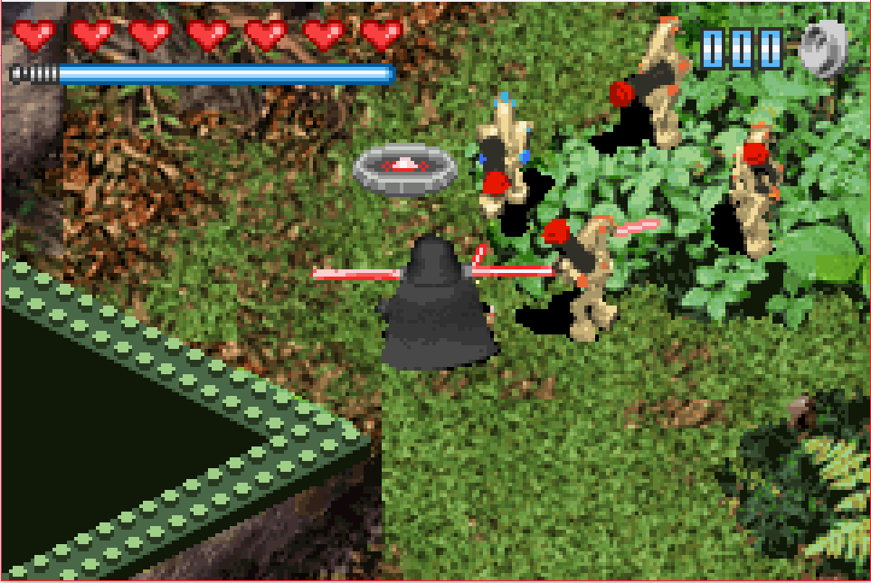
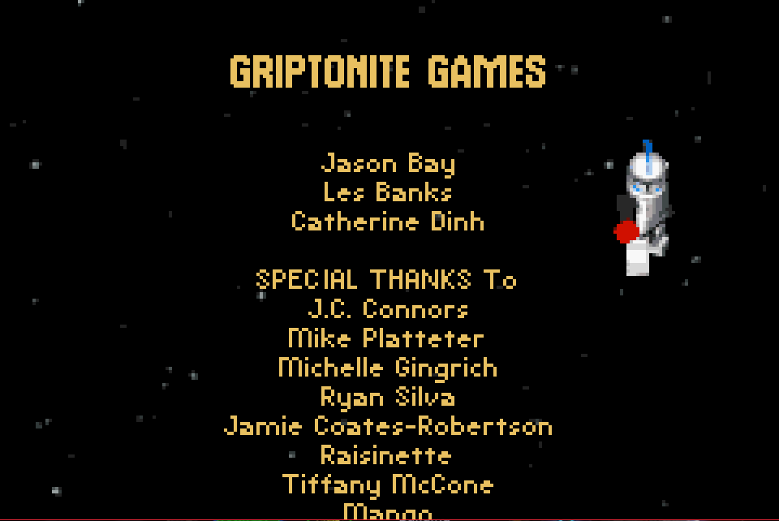

Lego Star Wars

Complete on 2017-09-23
2 / 5
Release Date: Mar 29, 2005
Meta Score: 75
Screenshots



Notes
Lego Star Wars is a crazy idea for a video game. Lego games had a history of being mostly just kid friendly (although there are some gems in there). Star Wars games/movie tie ins in general had a history of being shoddy, slapped together to come out with the films and make a quick buck. Combine the two together and you get... a great game? At least on home consoles.Not on the GBA however. This port fails to capture the magic that made the home console version a great game.
The game covers Episodes 1-3, letting you play through the action scenes. The stories are covered very lightly through "cutscenes" consisting of pre-rendered still frames, and some short in-engine cutscenes. The slapstick humour of the console versions has mostly failed to translate due to the limited animations available.
The game looks pretty bad. It's mostly pre-rendered 3d backgrounds with a small number of pre-rendered 3d lego objects placed on top. Everything is very aliased. The game slows to a crawl when too much is going on too.
Gameplay is pretty uninspired. It's a fixed perspective pseudo-3D action game, with you jumping around and hitting people with lightsabers. Everything is really sluggish, worsened when the game lags in busy scenes. In particular, the character swap animation takes forever. Avoiding enemy bullets is mostly impossible due to the sluggishness, and enemies seemingly respawn infinitely. This lead to me mostly running past them.
Most of the time you're just trying to figure out where to go. There are some very weak puzzles that revolve around hitting buttons in the right order, and the occasional goal like "Free all the clone soldiers". You have to swap characters for a (very limited) set of special abilities, like higher jumps or hacking panels with R2. Boss fights are lightsaber duels that are mostly button mashing. The only hard one is Count Dooku in Episode 3 due to his bullshit force lightning attack.
There isn't much content in the game either. Each Episode only took me around an hour to get through I think. There is a little replayability with free play mode and collectables to find, but they didn't seem very enticing. Episode 2 in particular is very short. It starts at Tatooine which is a long way into the film, and only has 3 levels. Several levels re-use graphics too (multiple Tatooines, multiple Naboos, multiple Kashyyks). In spite of this, Episode 3 still feels padded with 2 very long treetop levels.
All in all, not a lot of fun. Especially with the home console versions as a yardstick. I think this is the same mistake as NFS: adapting the home console version as directly as possible without accounting for the GBA's limitations. Handhelds won't be able to do this well for a few generations after the GBA. It is possible to adapt home console games decently. The GBA Crash games spring to mind as decent attempts.